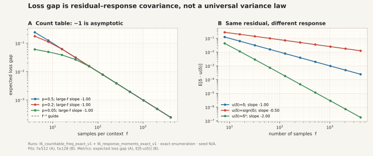
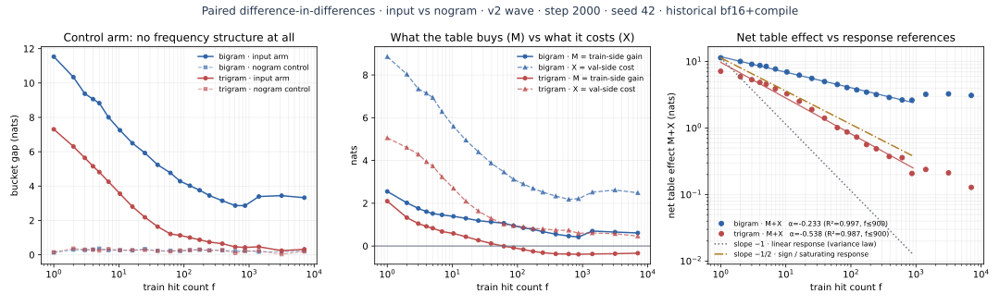
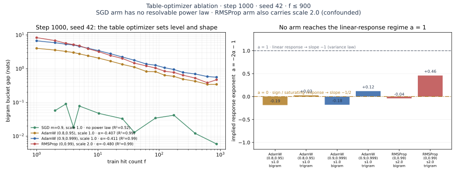
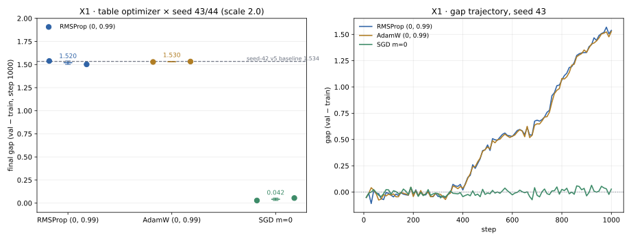
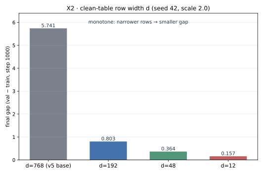
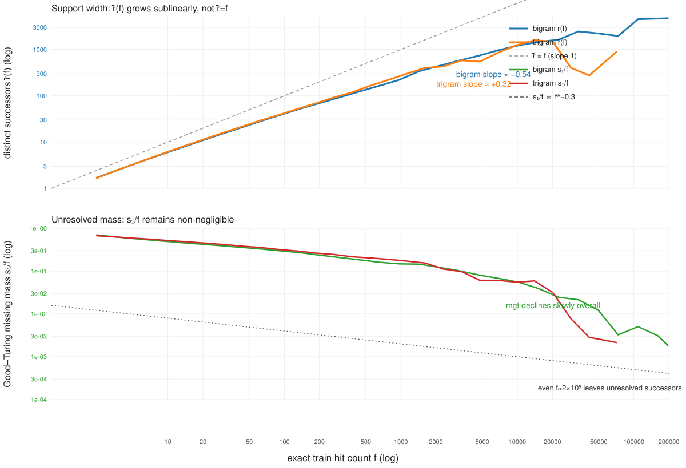

Loss gap：最小模型、具体数据与边界
目前没有在自然语料上观测到稳定的 −1 指数；loss gap 也不普遍正比于方差。单个数据集上的精确对象是采样残差与 learned logits 的内积；跨训练集取期望后才是 residual–response covariance。
−1 是 resolved count table 在线性响应下的条件渐近结果，不是自然语言必须满足的定律。配对实验（§3）显示频率–gap 曲线的全部结构都由 n-gram 表产生，backbone 对照臂完全平坦；optimizer 消融（§4）反解出的响应指数 a 全部落在 0 附近而非 1，因此观测斜率是 −1/2 量级 —— 指数由「表如何写入」决定，不由采样方差决定。1. 最简单、但没有偷换假设的模型
固定一个 context。训练数据集为 D，真实条件分布为 p，经验分布为 p̂_D，模型在该数据集上学到 logits z_D。记采样残差 δ_D=p̂_D−p。
这也精确对应你的写法：对 target distribution 求导有 ∂CE(p,q)/∂p=−log q；这里固定 q_D，并用 δ=p̂−p，所以 CE(p,q_D)−CE(p̂,q_D)=δᵀlog q_D。导数的变量不是模型概率 q。
把 logits 分成无采样残差时的基线 z* 与 learned response u_D=z_D−z*，单次数据集的 realized gap 是
若模型响应在当前区域可展开为 z_D=z₀+Aδ+½B[δ,δ]+…，才得到
所以协方差 Σ 是局部线性响应的首项；三阶、四阶和更高矩并没有被精确式排除。
“分布无偏”不等于“train loss 无偏”
E[p̂_train]=p；独立的 p̂_val 同样满足 E[p̂_val]=p，所以不能说“val 分布有偏”。偏差来自模型 q_D 正是用 p̂_train 拟合的：train loss 因复用同一样本而 optimistic；独立 val loss 对固定 q_D 无偏估计 population CE，但该 population CE 相对最优熵 H(p) 有 estimation excess。在平滑、全支持且大样本的 resolved count table 中：
E[L_train]−H(p)≈−(K−1)/(2f)，E[L_val]−H(p)≈+(K−1)/(2f)，相减才是 (K−1)/f。
低维支撑的真正作用是把有效维数固定为 K−1，并在所有 fp_i≫1 后允许统一 Taylor 展开；它不会让经验分布本身变成有偏估计。你说的“随数据量变化的 bias”更准确地说是拟合同一样本后，对 loss 这个非线性泛函产生的自适应偏差。
2. 为什么指数不一定是 −1
你写的 ΔL≈(∂L/∂p)δp 描述的正是上面的第一项。若偏导被当成与采样无关的常数，则 signed mean 因 E[δp]=0 消失，而典型大小/绝对值为 O(f⁻¹ᐟ²)。一般 K 类分布有
二元比例残差进一步给出
更一般地，若基线已达到 z*=log p+constant，一阶系数是 √Varp(log p)；均匀 p 时 log p 在 simplex 切空间上为常数，一阶项同样消失。
若二元模型平滑地跟随训练比例，写成 q_D≈p+ρδ，则最小展开是
系统性期望 gap 还必须加入“模型如何响应这份残差”。令 u(δ) 为 learned logit response，则 G_response=δu(δ)。若 u(λδ)≈λᵃu(δ)，统一标度为 E[G_response]∝f−(a+1)/2：
线性响应 · a=1
u(δ)=ρδ，则 E[G]=ρE[δ²]∝f⁻¹。这才是方差律。
符号/饱和响应 · a=0
u(δ)=sign(δ)，则 E[G]=E|δ|∝f⁻¹ᐟ²。
三次响应 · a=3
u(δ)=δ³，则 E[G]=E[δ⁴]∝f⁻²。
与残差无关
若 u 不随训练残差变化，期望 gap 为 0，即使 Var(δ)>0。

l6_counttable_freq_exact_v1 与 l6_response_moments_exact_v1；seed=N/A。左：expected loss gap；右：E[δu(δ)]。拟合区间和 run 身份由图脚本从各自 summary.json 读取。3. n-gram 模块为什么会 overfit
§1 把 gap 拆成「采样波动」与「learned response」两项，但单臂数据无法把它们分开。nogram 对照臂让这个分离变成实测：它与 input 臂共享 backbone、数据顺序、seed、step 与分桶定义，唯一差别是没有 n-gram 表。于是有一个无近似的配对恒等式：
δᵀu_D 那一项在频率轴上的分布。
0.13–0.37 nats，没有频率结构；input 臂从 11.5 降到 2.9。中：M（表在 train 侧买到的）与 X（在 val 侧付出的）分开画。右：净效应 M+X 与 −1／−1/2 两条响应参考线。M2-v2 历史登记 input vs nogram，step 2000，seed 42，历史 bf16+compile；逐桶数值见 theory_paired_decomposition.csv。第一个结论来自左图，而且它很强：对照臂的 gap 与 f 无关。backbone 单独不产生任何频率依赖的 gap —— 这正是 §2 第四格「响应与训练残差无关 ⇒ 期望 gap 为 0」的实证（实测 0.13–0.37 而非 0，是 exposure 与有限 batch 的常数底噪）。因此频率–gap 曲线的全部结构都由 n-gram 表产生，不是 backbone 的性质。
3.1 f=1 桶上有一个精确闭合点
命中数恰为 1 的 context，其经验条件分布是单点质量，所以 H(p̂_c)=0 精确成立。由 L_train=H(p̂)+\mathrm{KL}(p̂\,\|\,q) 得
bigram · f=1 桶 | L_train = KL(p̂‖q) | L_val | gap |
|---|---|---|---|
| input 臂（有表） | 0.283 | 11.817 | 11.534 |
| nogram 对照（无表） | 2.833 | 2.962 | 0.129 |
| 差 | M = 2.550 | X = 8.855 | M+X = 11.405 |
读法：没有表时，模型对这个「只见过一次」的后继残留 2.833 nats；加上表后残差掉到 0.283 nats —— 表把单次观测记住了 90%。代价是同一批 context 的 val loss 从 2.962 涨到 11.817。所以
trigram 的同一桶给出 M=2.077、X=5.194（0.918 vs 2.995；8.224 vs 3.030），方向一致但记忆更浅 —— 与它 19.0M distinct contexts 挤进同一张表的碰撞水平吻合。
3.2 支撑账：为什么是表 overfit，而不是 backbone
| 量 | 值 | 来源 |
|---|---|---|
| 1x shard 训练 token | 24264 × 2049 ≈ 4.97×10⁷ | table_occupancy.json |
| distinct bigram / trigram contexts | 3,538,293 / 18,989,467 | 同上 |
| 平均命中数 | bigram 14.1；trigram 2.6 | 相除 |
| per-context 私有自由度 | d = n_embd = 768（clean 单表规格） | 极简 setting §1.2 |
典型 trigram context 用 768 个私有参数去拟合 2.6 个观测；backbone 的参数在所有 context 之间共享，per-context 有效自由度是 O(1)。表把这个比例整个翻转过来，这就是 overfit 定位在模块而非 backbone 的支撑级原因。
碰撞把损害推到了从未出现过的 context 上：novel 桶（训练命中数 0）的 val loss，input 臂 13.095 vs 对照 2.989（+10.106 nats），trigram 为 9.139 vs 3.174（+5.965）。这些行本身从未被该 context 写入，读到的是共享哈希行里别人的记忆。同一机制在高频端反过来伤 train：trigram 的 M(f) 在 f≈40–62 之间变号，之后稳定在 −0.16…−0.39 nats，即高频 trigram context 带表反而比不带表的训练损失更差。
历史证据与当前补充
上面的机制分解来自单 seed、历史 bf16+compile 波次、legacy 多层／2-hash 表；它确定了载体（表 + 共享 readout + 碰撞）和符号（低频净损失、高频碰撞损害），但不能单独确定 d 的因果作用。当前 v5 的 X2 行宽扫描已经补上这一缺口，但它仍是单 seed、step-1000 的快速验证，不能替代完整多 seed 阵列。
4. 指数由响应形状决定，不是由采样律决定
§2 给出标度关系 E[G]∝f^{−(a+1)/2}，其中 a 是 learned response 的齐次指数（u(λδ)≈λᵃu(δ)）。把它反解，就得到一个可以直接从任何频率–gap 拟合里读出的量：
α 是双对数斜率。a=1（线性响应）↔ α=−1，即方差律；a=0（符号／饱和响应）↔ α=−1/2。于是「斜率为什么不是 −1」变成一个可测的问题：只要改 table optimizer，就改变了表对残差的响应形状，因此应当改变 α。历史 M3/M4 仅作溯源；当前可比较的完整曲线是注册表中的 M3b，seed 稳定性由 X1 补充。

f ≤ 900 窗口下四个 table optimizer 的 bigram 桶 gap。右：由 a=−2α−1 反解的响应指数，只画 R² ≥ 0.7 的臂。数值见 theory_optimizer_exponent.csv。| table optimizer | run_id | branch | α | R² | mean gap | 反解 a |
|---|---|---|---|---|---|---|
| SGD m=0.9, scale 1.0 | nglab1x_opt_sgd_09_fixed | bigram | −0.298 | 0.522 | 0.039 | 无法辨识 |
| SGD m=0.9, scale 1.0 | 同上 | trigram | +0.091 | 0.052 | 0.026 | 无法辨识 |
| AdamW (0.8,0.95), scale 1.0 | nglab1x_opt_adamw_080950_fixed | bigram | −0.407 | 0.992 | 1.649 | −0.185 |
| AdamW (0.8,0.95), scale 1.0 | 同上 | trigram | −0.513 | 0.970 | 0.501 | +0.027 |
| AdamW (0.9,0.999), scale 1.0 | nglab1x_opt_adamw_090999_fixed | bigram | −0.411 | 0.991 | 2.727 | −0.178 |
| AdamW (0.9,0.999), scale 1.0 | 同上 | trigram | −0.559 | 0.944 | 0.794 | +0.119 |
| RMSProp (0,0.99), scale 2.0 ⚠ | nglab1x_input_v2_fixed | bigram | −0.480 | 0.992 | 2.761 | −0.039 |
| RMSProp (0,0.99), scale 2.0 ⚠ | 同上 | trigram | −0.730 | 0.961 | 0.637 | +0.459 |
三件事同时成立：
一、SGD 臂没有幂律可言。它的 gap 只有 0.026–0.039 nats（比其他臂低两个数量级），R² 掉到 0.52／0.05。所以正确的表述不是「SGD 把指数推向 −1」，而是不做 per-coordinate 归一化时，低频表行几乎没被写入，频率结构根本没有形成。这否证了「线性响应 ⇒ 观测到 −1」的天真预期：在真 harness 上，线性响应对应的是没有记忆，不是陡幂律。
二、三个归一化型优化器都给出稳定幂律，且 a 全部落在 0 附近（−0.19…+0.46），没有任何一臂接近 a=1。这正是 §2「符号／饱和响应」那一格：RMSProp（β₁=0）与 Adam 把更新除以梯度二阶矩，Δw≈−\eta\,\mathrm{sign}(g)，更新幅度与梯度大小几乎无关。命中一次和命中一千次的单步写入强度相同，低频行因此被同等强度地写满 —— 这既解释了 a≈0（故 α≈−1/2），也解释了 §3 的低频净损失。
三、方差律要求的 a=1 在本项目任何一个 run 里都没有出现，所以「充分采样区斜率应为 −1」在这份数据上不是「尚未观测到」，而是与所用优化器不相容。
4.1 词表与支撑在这里的正确位置
常见的错误是把 resolved 公式里的 K 直接取成词表大小。V=8192 时它在 f=1 处预测
f ≫ K：取 K=V 就需要 f ≫ 8192，而本语料最大有界桶的几何中点只有 7071。所以词表大小的作用不是给出指数，而是划定 resolved 区的入口：整条实测曲线都在 f < K 的未解析区，那里的形状由「表如何写入」（§4 的 a）而不是「多项式采样方差」决定。把 K 换成实测有效支撑 exp(L_train)=1.33 也救不回来 —— 它给 0.33 nats，低一个半数量级。两个方向都错，说明失配不在 K 的取值，而在机制。
当前 v5 补充实验的回填
历史表的判决力曾被两个已知缺陷限制：(i) RMSProp 臂同时带 table_lr_scale=2.0，与 SGD／AdamW 的 1.0 不同，optimizer 与 LR 混淆；(ii) 这批是历史 bf16+compile、旧 warmup/warmdown schedule、单 seed。当前 v5 已统一 table LR scale=2.0、warmup_constant(100)、bf16/no-compile、clean R=2^20 与 freq=10，并完成 X1/X2/X3；下列数字仍按单 seed 或小样本实验的证据等级解读。
- X1 · optimizer × 响应指数（已完成）：
table_optimizer ∈ {rmsprop(0,0.99), adamw(0.8,0.95), sgd(m=0)}，三臂统一table_lr_scale=2.0，seed 42/43/44。step-1000 final gap 均值±sample SD：RMSProp1.530459±0.025256、AdamW1.520992±0.016406、SGD0.053736±0.024813；SGD 的近零 gap 与归一化型 optimizer 的约 1.5 gap 在三个 seed 上分离。 - X2 · 私有自由度剂量（已完成）：只改表行维度
d ∈ {768,192,48,12}，R与其余全部不动。step-1000 gap 为5.741356/0.803015/0.363563/0.157422；单 seed 下随 d 变窄而下降并接近 no-gram，但不升级为多 seed 普适定律。 - X3 · 语料侧支撑测量（零 GPU，CPU 即可，已完成）：从 tokenized shard 统计每个 context 的命中数
f与不同后继个数r，得到r̄(f)。它把「有效支撑」从exp(L_train)这个代理变成直接计数，并给出H(p̂)的桶级真值，从而把 §3 的M/X分解进一步拆成「统计必然」与「模型选择」两部分。不占卡、不改 setting。
X3 已完成（2026-08-26，corpus_rbar_freq_v1_fixed，登记 §29）：语料侧实测 bigram r̄(f)≈f^{0.54}、trigram r̄(f)≈f^{0.32}（log–log 后半窗斜率），Good–Turing 缺失质量 mgt=s₁/f 整体 ≈f^{−0.3}、即使在 f≈2×10⁵ 超高频 bin 仍 ≈10⁻³。含义：f·P(y)≫1 的解析区条件在自然语料的大频率窗口内不成立，(K−1)/f 的 −1 采样律只属于 L3 有限 support 合成对照，不能外推到 S1——与「未解析长尾压低斜率」一致。X1 与 X2 已完成，图与 run provenance 见注册表扩展验证行及 §27–§29。

optv5c_*_fixed：step-1000 final gap 的 seed 43/44 原始点、两点误差线与 seed-43 gap trajectory；seed 42 复用 §24b，三 seed 均值/SD 见 §27。
ctbl_dim*_input_v5_fixed：clean-table row width 的 step-1000 final gap；d=768 为 v5 baseline，d=192/48/12 为新增单变量 run，完整 setting 与限制见 §28。
corpus_rbar_freq_v1：train shard 1、chunk 语义、无训练；上图是 distinct successor 支撑宽度，下图是 Good–Turing 未见后继质量。曲线读取自 bigram 与 trigram 统计产物；不是 gap 曲线，也不把它解释为自然语言的 −1 定律。5. 现在到底有哪些数据
| 证据 | 实验对象与具体数据 | 原始数据 / 结果 | 能说明什么 |
|---|---|---|---|
L6 exactl6_counttable_freq_exact_v1 | 二元 count table；三个真概率、11 个样本量、Jeffreys smoothing；二项分布逐项精确求和；seed=N/A。 | config · 逐点 metrics · 拟合 summary | 图中的斜率由 artifacts 自动读取：−1 只在 resolved 大样本区成为渐近；有限样本下高阶矩不可忽略。 |
L6 exactl6_response_moments_exact_v1 | 同一 Rademacher 均值残差；10 个样本量；linear/sign/cubic 三种响应精确枚举；seed=N/A。 | config · 逐点 metrics · 拟合 summary | 同一 residual 经不同响应分别选择二阶矩、绝对一阶矩和四阶矩；指数不唯一。 |
| L3 theory/MC | 均匀 finite-support count table；multinomial Monte Carlo；固定 RNG seed。它不是训练 run。 | 代码、配置与拟合入口 · artifact-driven 图 | 只作为理想 resolved positive control，不是 nanoGPT 或自然语言结果。 |
M2 natural corpusnglab1x_input_v2_fixed | 固定自然 corpus；seed 42，末端 step 2000；observed hit-count buckets；历史 bf16+compile 波次。 | run summary · raw buckets · 描述性审计表 | 描述性斜率明显不是 −1，且随 step 漂移；固定 corpus 的横截面分桶不是 repeated-D 采样实验。 |
N1 natural 5gramngram5_order5_trigram_fixed | 自然语言 order-5 context + trigram table；step 2000；seed 42/43。 | run summary · raw buckets · 登记 §19 | global gap 接近零且 per-bucket 曲线非单调，不能拟合或宣称统一 −1。 |
{kind=link}
6. 这些实验为什么不能混在一起
- L3/L6：固定真实分布，枚举或重复抽取训练数据集，直接匹配数学期望
E_D[G]。 - M2/N1：固定一份自然 corpus，把不同 context 按观测频率分桶；support、长尾、碰撞、transfer 和 exposure 都随桶变化。
- 模型 seed ≠ 数据重抽样：换 seed 测的是优化/初始化稳定性，不能估计采样残差与 learned logit 的数据协方差。
- table-size 与 frequency 是不同轴：前者主要改变 collision/memory channel，不能拿其正斜率支持或反驳
f⁻¹。 - 有限 validation 也有测量噪声：若
p̂_val=p+η，观测量是G_obs=(δ−η)ᵀz_D；独立 η 不改变期望，但增加O(m⁻¹ᐟ²)波动。
即使每个固定 context 都处在线性响应区，条件均值也只是
自然语料按 observed f 分桶时，p_c、support 和响应 Jacobian J_c 的组成会随 f 改变，所以实际是 E[A_c|f]/f；分布相关系数若随 f 漂移，log–log 斜率自然不等于 −1。
加入 replay / optimizer dynamics 后，最小动态扩展可以写成
7. 目前允许写的最强结论
(K−1)/f。
配对双差分给出无假设的分解 G^arm−G^ctrl = M(f)+X(f)；nogram 对照臂的 gap 与 f 无关（0.13–0.37 nats），故频率结构全部来自表。f=1 桶上 H(p̂)=0 精确成立，因此 L_train 就是 KL(p̂‖q)：input 0.283 vs nogram 2.833，杠杆比 X/M∈[3.24,5.28]。碰撞使 novel 桶被污染 +10.106（bigram）／+5.965（trigram）nats，并使 trigram 在 f≳60 后 M<0。归一化型 optimizer 反解 a∈[−0.19,+0.46]，SGD 臂无可辨识幂律。
不能写：“gap 普遍正比于方差”“自然语言的指数应为 −1”“现有 bucket 图验证了采样律”“表大小/词表大小与 gap 存在普适幂律”“SGD 把指数推向 −1”“
a≈0 已被定论证明”（frequency slope 的机制拟合仍受单 corpus、单 seed 与有限频率覆盖限制）“X1–X3 的所有机制预测已经被验证”。